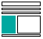
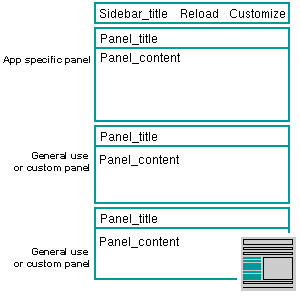
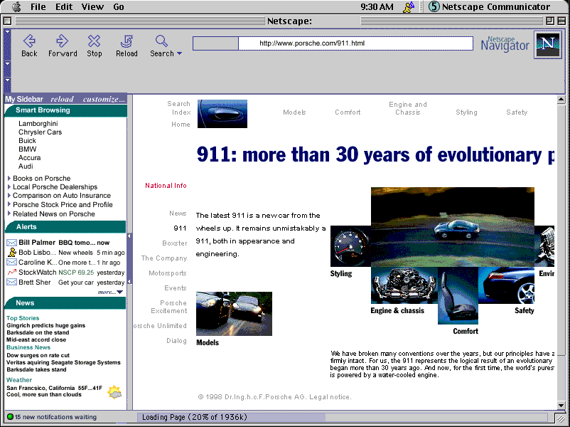
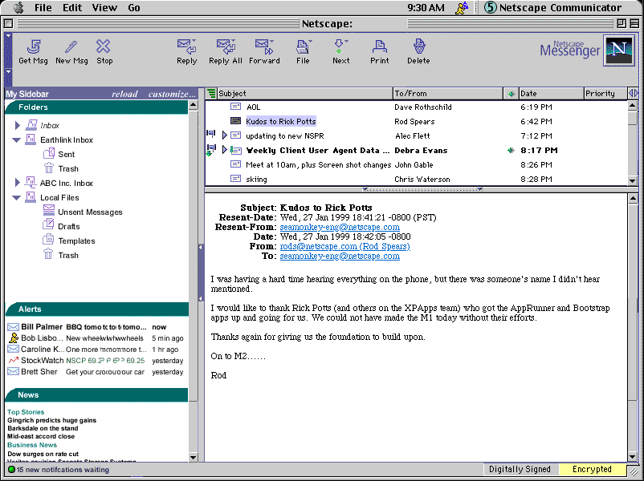
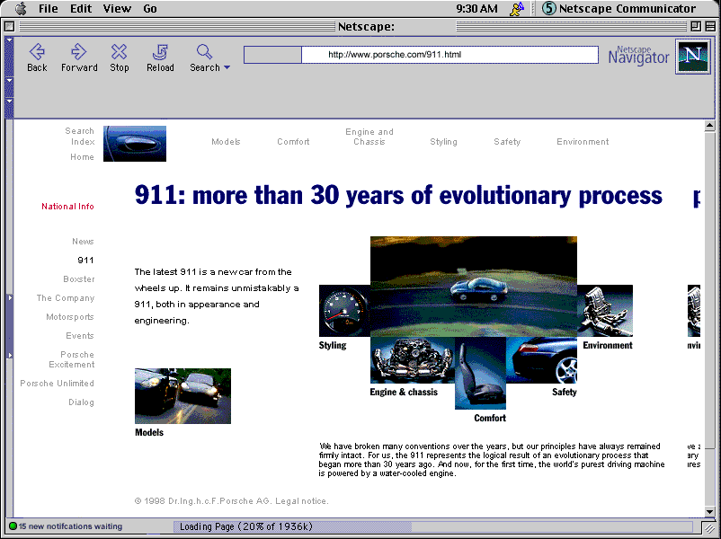
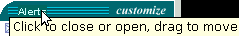
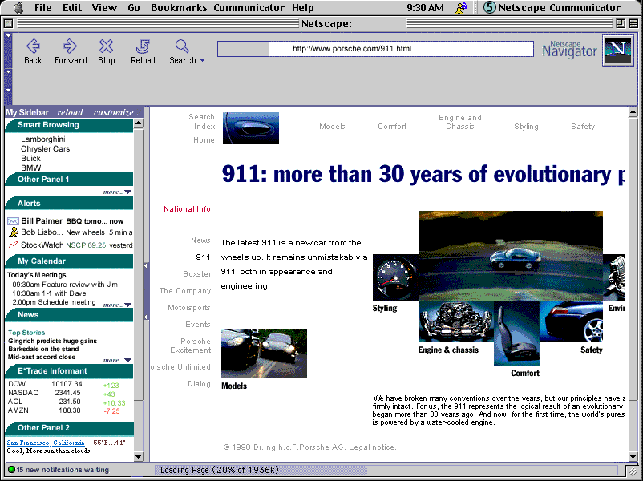

| Communicator 5 |
UI Specification
|
| Communicator SideBar |
Last Modification:
|
| Author: German Bauer
(with ideas from Warren Harris and others) Initial Creation Date: January 10,1998
|
Status: Implementable specification, coordinated with Netcenter and Client PM and Engineering | ||||||||||||||||||
|
What's related: Quick Index:
|
Feature Team
|
||||||||||||||||||
Recent Changes
7/25/99 Revised and updated designs for sidebar customization based on input from Netcenter design (Bryce Glass)
5/25/99 Added design details for sidebar, panels and customization page, as
well as customization rules for content providers and applications
previous spec is here.
1/20/99 Complete redesign based on adding messenger to new gecko based Seamonkey
platform
old spec is here.
Summary
What is it?

It is a side-by-side viewing area inside a communicator application window that assists end users in finding 'the next bit of information' more quickly and easily.Goals
See End User Objectives in the Sidebar PRDTarget Users
The target users of Communicator 5 and specifically "information consumers"User Tasks
Fundamental Tasks Intermediate Tasks Advanced Tasks
- Access Web pages with content related to current task
- Access Messenger Folders
- Access personalized subset of news, headlines etc. from 'My Netscape'
- Access set of "pager" like notifications
- Customize contents of SideBar
- Open/Close Sidebar
- Resize width of Sidebar
- Resize individual sidebar panels
- Change sidebar configuration, e.g.:
- tear off in separate window
- change default width
Design Cheat sheet

Default SideBar in Navigator
Default SideBar In Messenger

SideBar closed (notification area visible)

Prototype
A NS 4.x JavaScript based prototype showing some of the intercation and visual design can be accessed here. Make sure you read the instructions script first. You may also download a zip file of the whole demo in order to run the it offline.
Design Details
Design Philosophy
Out of box experience
Everything showing on the default sidebar should be
- useful
- immediately accessible without scrolling
- consistent in terms of user experience, ie. all panels will behave similarly
- a combination of timely context-sensitive and user-relevant information
Because of this and the target screen size for C5 of 800*600 we recommend no more than three panels be included in the default setup for each C5 application. The top panel will always be the application centric panel (context sensitive) whereas the panels below provide access to information across apps.
Panels may be removed or added on a per application basis (using the 'customize' button on the sidebar header)
In addition, we recommend that content should be kept to be brief minimum (headline style) in order to be quickly scann-able by the user.
In addition, panel content providers and applications on the C5 platform will be allowed to design the interior of their panels but not the frame or user interaction of the panel frame or the sidebar as a whole.
Design Rules
- Panels may not have their own menus or insert menus in the menu bar
- Panels may not modify the appearance or functionality of their own panel frames or the appearance or functionality of other panels or their frames
- Panel content can either target itself or the content window
- Panel content should make use of the sidebar contents style sheets wherever possible (provided with the shipping product) so that users can adjust viewing sizes etc. as a whole.
- Scrollbars are not to be used inside panels. Instead a global scrollbar will be provided to allow scrolling through all panels (this is to avoid the appearance of double scrollbars which will confuse users). Also a mechanism will be provided to allow panels their content viewing area to be resized (cropped), collapsed or fully expanded.
Anatomy of the Sidebar area
Resizing area

{kind=link}
{kind=link}
{kind=link}
A slim 8 pixel wide divider area will allow users to resize the content width of the sidebar. Clicking on the divider will allow users to close the sidebar when the sidebar is open or to open it to the last used width when it is closed. Each application is responsible for storing its last used sidebar width.
The divider area is still visible even when the sidebar is closed in order to ease finding how to re-open the sidebar.
A tooltip is to be used to indicate this functionality when mousing over the divider area. A visual indication (aka 'grippy') with hilite on mouseOver and mouseDown) is to be used to further indicate the divider functionality. While this visual inidication will be shown at a middle vertical poistion of the divider only, the divider will be mouse-sensitive across it's whole area.
Default width out-of-the-box for Navigator will be 170 px for 800 * 600 and smaller displays, 220px for larger displays. Default width out-of-the-box for Messenger will be like Messenger 4.5 (190 px) for 800 * 600 and smaller displays, 220px for larger displays.
In addition access to open/close functionality as well as to sidebar customization will be provided from the 'Sidebar' item inside the 'View' menu. Also under special circumstance the sidebar may be opened from JavaScript (e.g. to display search results, when previewing a customization etc)
Content area
One vertical scrollbar will be used to scroll when the total height of visible panel areas exceeds the visible content area of the sidebar. A horizontal scrollbar will not be used.
Header area
Reload button
The reload button will cause the content of all panels to update immediately, even when an auto-update was not yet scheduled. This will work independently of the reload button on the main Navigator or Messenger toolbar. This is to let users easily recover from 'stuck' panels due to network problems without affectin their browser or mail content area.
Customize button
The customize button gives users access to customizing the number and order of panels in the sidebar. See the customization section below.
Anatomy of a Sidebar panel
Content area
Header area

Customize button
Resizing content view
Resizing content view
Footer area
Collapsing and expanding content view
Re-arranging sidebar panels
| Heights
of individual panels can be re-arranged by dragging their panels Double clicking will expand/collapse single panels |
When dragged, all panels below the panel dragged will move, thus not disturbing the arrangement of panels previously set. | Panels
that cannot display all their content in the set height, will display a
little "more..." icon/text. Clicking on this area will maximize the
panel to fit its content. Scroll bars for the sidebar will show up when the sum of the display heights of open panels exceeds the visible area of the sidebar. |
||
{kind=link}
Customizing content of the Sidebar
Panels may be removed or added on a per application basis (using the 'customize' button on the sidebar header). When customization takes place, part of the a new window will be opened showing the customization page which offers an aggregation of local and net-based panels.
Customization window
To that end we have a two frame design where the upper frame shows the list of panels loaded in the sidebar. This list is always available, even in offline mode. This is also application specific, that is the contents will look different based on from which application the customize sidebar window has been launched. The user may remove panels, or re-arrange their order in the sidebar. A customize button will be provided to customize each inidividual channel.
Upon hitting the Customize... button in the top frame, the lower frame shows the customize URL which lets users set parameters individual to each panel. This customization area is furnished by the panel content provider.
Users will be able to add panels by using this cutomize dialog or add them directly by pressing a button on a website they're on.The lower pane will a listing of channels that can be added. The content area
of this is provided by Netcenter. This design needs to scale with the expected
amount of panels coming online once the product is launched. The design shown
here is not final but probably needs to be a combination of categorized hierarchical
lists and possibly a search field.
In addition a list of local client based panels will be shown. This local
list is the only list of panels shown when the user happens to be offline.[This
needs to be verified - gb]
Users will be automatically led to the customize dialog (see above) once the panel has been added so the added panel becomes useful for them immediately.
Here's the whole flowchart to visualize the flow of action (click to see full
size diagram):
Users will have the same UI experience wether they add from a web site or they
add from the customize dialog.
Sidebar after customization with large number of panels
{kind=link}
Menus and Preferences
Menu bar
n/aContext Menus
this section will be added laterPreferences
We do not expect prefs to be directly exposed to the main client, rather all relevant settings will be configured dynamically from Netcenter.
Error Messages
and Dialogs
this section will be added later
Condition Message User Choices